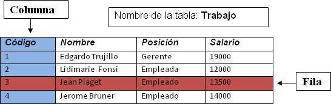
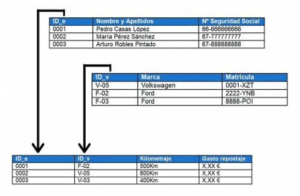
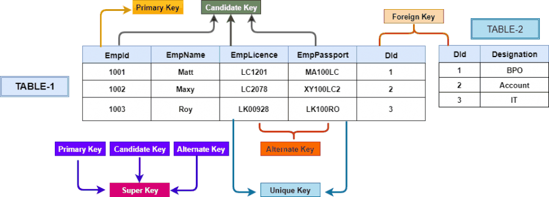
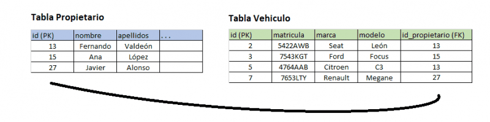
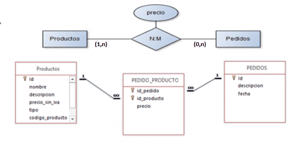
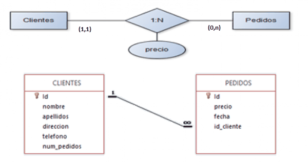
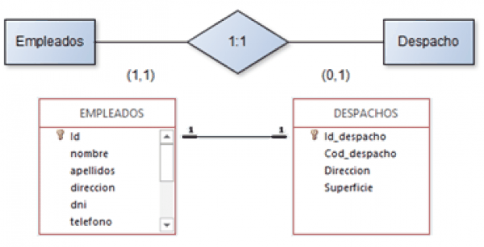
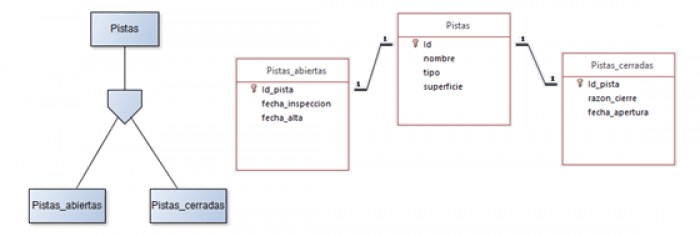
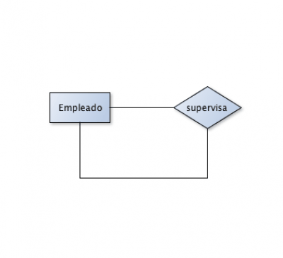

1. Modelo RelacionalRelación, atributos, dominios y representación
Una base de datos relacional es un conjunto de datos de una o más tablas en registros (filas) y campos (columnas).
Relación: es el elemento básico que puede representarse en forma de tabla. Fundamentalmente es una estructura de datos que se representa con un nombre y un conjunto de atributos o columnas.
Ejemplo: JUGADORES (id_jugador entero(4), dni entero(8), nombre character(10), equipo carácter(20), edad entero(3)).
Una relación queda determinada por su nombre y sus atributos de forma unívoca.
- Dominio: conjunto de valores que puede tomar un atributo (entero, carácter...).
- Atributo: cada propiedad de cada relación puede tomar valores.
Es el modelo de representación que siguen la gran mayoría de los SGBD relacionales (MySQL, SQL Server, Oracle, Ms Access, entre otros) en la actualidad, puesto que es el modelo de datos más extendido.
Por tanto, es necesario transformar nuestro modelo Entidad/Relación a un modelo relacional si queremos crear nuestra Base de Datos en algún SGBD relacional.
| Modelo Relacional | Gráficamente | Información tradicional |
|---|---|---|
| Relación | Tablas | Ficheros |
| Atributos | Columnas | Campos |
| Tuplas | Filas | Registros |
1.1. Representación
Existen dos tipos de definiciones:
- Esquema de Relación: estructura de la tabla (ejemplo anterior JUGADORES).
- Extensión o Cuerpo: conjunto de elementos o tuplas de la tabla que varían con el tiempo.
| Id_jugador | Dni | Nombre | Apellido | Equipo | Edad |
|---|---|---|---|---|---|
| 1 | 3333 | Juan | Martínez | UGijón | 32 |
| 2 | 4444 | Pedro | Fernández | UGijón | 37 |


En la práctica no es necesario dibujar una tabla completa, sino que se suele indicar el nombre de los campos, y los campos claves que conforman las relaciones:
Trabajo (#codigo, nombre, posicion, salario) Empleado (#dni, nombre, apellidos, -codigo_trabajo) Profesor (#id, dni, nombre, apellidos, departamento) Asignatura (#id, nombre, n_horas, -id_profesor)
2. RestriccionesInherentes, de usuario, claves e integridad referencial
Restricciones inherentes
Inherentes: derivadas del propio modelo.
- No existen dos elementos iguales: no existen dos registros (filas) iguales en la misma tabla.
- No existe un orden en las filas de la relación.
- El orden de los atributos (columnas) no es significativo.
- Cada atributo toma UN ÚNICO valor del dominio (un nombre es solo «char» y no entero, y siempre así).
- Debe cumplir la regla de integridad: «Ningún atributo que forma parte de la clave primaria puede tomar un valor desconocido o nulo».
| Las inherentes al modelo, que diferencian una relación de una tabla |
|---|
| No puede haber dos tuplas iguales. |
| El orden de las tuplas es irrelevante. |
| Los atributos tienen un único valor. |
| La clave primaria no puede tener valor nulo. |
Restricciones de usuario (semánticas)
De usuario (semánticas): impuestas por las características del sistema a modelar. Cada fila se identifica por la clave.
- Clave candidata: conjunto mínimo de atributos que identifican unívoca y mínimamente cada elemento de una relación. Una relación puede tener varias claves candidatas.
- Clave primaria: de las claves candidatas, la que el diseñador escoja por motivos ajenos al modelo. Los atributos que forman parte de esta clave no pueden tomar valores nulos.
- Clave alternativa: claves candidatas que no han sido escogidas como clave primaria.
- Clave ajena (foreign key): conjunto de atributos de una relación cuyos valores han de coincidir con los valores de la clave primaria de otra relación. La clave ajena y la clave primaria deben estar definidas del mismo modo.
Clave primaria
Denominamos Clave Primaria, en inglés Primary Key (PK), al campo identificador principal de una tabla. Es la clave candidata elegida por el usuario para identificar a cada registro de la tabla.
La elección del campo que hará de clave primaria corre a nuestra cuenta, pero es habitual crear un campo id autonumérico para tal fin por motivos de simplicidad.
-- Representamos las claves primarias con la almohadilla (#) Trabajo (#codigo, nombre, posicion, salario) Profesor (#id, dni, nombre, apellidos, departamento) Asignatura (#id, nombre, n_horas, -id_profesor)

Clave ajena
Toda tabla cuyos registros tengan relación con los registros de otra tabla debe tener un campo cuyos valores identifiquen a los registros de otra tabla.
A este campo se le conoce como Clave Ajena o Foránea, en inglés Foreign Key (FK). Contiene los valores de la clave primaria de los registros de la tabla con la que se relaciona.
Aparte, es habitual que esta tabla también tenga un campo Clave Primaria.


La tabla Propietario tiene un campo (id) que actúa como clave primaria (PK) de la tabla. No puede haber dos registros con el mismo valor (id).
La tabla Vehículo tiene un campo (id) que actúa como clave primaria de la tabla. Además, la tabla Vehículo tiene un campo (id_propietario) que actúa como clave ajena (FK), y referencia cada uno de sus registros con un registro concreto de la tabla Propietario.
De este modo podemos saber quién es el propietario de cada vehículo. Como se trata de una relación 1:N, un Propietario puede tener varios Vehículos, pero cada vehículo solo puede tener un propietario.
-- Representamos las claves ajenas mediante un guion (-) -- Además, añadimos a la columna el nombre de la tabla de la que procede. Profesor (#id, dni, nombre, apellidos, departamento) -- Una asignatura es impartida por un profesor Asignatura (#id, nombre, n_horas, -id_profesor) -- Vehículos tiene una clave ajena que referencia a propietarios Propietarios (#id, nombre, apellidos, . . .) Vehiculos (#id, matricula, marca, modelo, -id_propietario)
Elección de claves primarias
A la hora de seleccionar la columna que ejercerá como clave primaria podemos utilizar dos enfoques:
- Clave Primaria Natural: son claves primarias que ya existen en nuestra tabla y tienen un significado real; representan datos reales. Ejemplos de claves primarias naturales son: dni, nss, matrícula, expediente, o combinaciones de columnas que tengamos en nuestra tabla.
- Clave Primaria Subrogada: son columnas clave primaria creadas por el programador exclusivamente para el diseño de la base de datos, sin que sean campos existentes en los requisitos de la base de datos. Consiste en añadir una columna autonumérica cuyos valores son generados por el motor de la base de datos de forma automática siendo siempre únicos. El ejemplo que nosotros usamos en estos apuntes es crear una columna id autonumérica.
Ventajas e inconvenientes:
- Para poder designar claves primarias naturales necesito que mi tabla tenga campos que sean claves candidatas. Esta situación no siempre se da, o requiere de la unión de varias columnas.
- A la hora de relacionar tablas, simplifica mucho la tarea que las claves ajenas sean lo más sencillas posibles; mejor si la clave ajena es un solo campo de la tabla a que sea una clave ajena compuesta. Para ello necesito que la clave primaria sea simple, y no se componga de varios campos.
- Las claves primarias subrogadas se pueden añadir a cualquier tabla aunque no tenga claves candidatas, tanto en el momento del diseño como en fases posteriores que requieren modificar la estructura de la BBDD.
En este módulo, tanto en los ejemplos como en las explicaciones, se opta por el uso de claves primarias subrogadas ya que permite plantear un enfoque más sencillo y escalable. Eso no quiere decir que el diseño sea mejor o peor que utilizando claves naturales.
Integridad referencial
Integridad referencial: garantiza que la relación entre dos tablas permanezca sincronizada durante las operaciones de actualización y eliminación.
- Operación restringida (RESTRICT): solo se puede borrar una fila de la tabla que tiene la clave primaria referenciada si no existen filas con esa clave ajena en la tabla que referencia. En este caso solo se puede borrar el departamento 2.
- Operación en cascada (ON DELETE CASCADE, ON UPDATE CASCADE): el borrado o modificación de una fila de una tabla cuya clave primaria sea ajena de otra relación conlleva el borrado o modificación de las filas de la tabla cuya clave ajena coincida con la fila a borrar. En el ejemplo anterior, si se borra el departamento 1, desaparecen todos los empleados de ese departamento.
- Operaciones con puesta a nulos (SET NULL): el borrado o modificación de una fila que contiene la clave primaria lleva consigo la puesta a nulos de los valores de la clave ajena que referencia.
- Operaciones con puesta a valores por defecto (SET DEFAULT): igual que la anterior, pero el atributo estará definido previamente con un valor por defecto que tomará si se elimina la clave primaria referenciada.
Otras restricciones
- De verificación: son los llamados CHECK, que permiten imponer condiciones a elementos o atributos de la relación. Ejemplo: un empleado puede cobrar entre 1000 y 2000 €.
- De aserción: la diferencia con el anterior radica en que ahora las condiciones pueden ser sobre atributos de más de una tabla. Ejemplo: no hay ningún empleado del departamento de informática que cobre más de 2000 €.
- Disparadores: permiten determinar una acción determinada ante una condición. Ejemplo: al introducir un empleado de informática cuyo salario sea mayor de 1500 €, informar al administrador de la base de datos.
4. Transformación E-R a relacional: entidades y atributosReglas para pasar entidades y atributos a tablas
El paso de un modelo E/R a un modelo relacional se puede llevar a cabo, en gran parte, siguiendo una serie de reglas o pautas, que se enumeran a continuación:
- Toda entidad se transforma en una tabla. [SQL: CREATE TABLE]
- Todo atributo simple o derivado se transforma en columna de una tabla.
- Los atributos estructurados desaparecen de la tabla y solamente se transforman los campos de los que se componen en nuevas columnas.
- El identificador único de la entidad se convierte en clave primaria. Siempre que pueda, añadiré un campo id como clave primaria. [SQL: PRIMARY KEY | UNIQUE para el AIA (no nulo, obligatorio) | FOREIGN KEY (atributos) + REFERENCES relación]
- En los atributos multivaluados, el atributo de la entidad origen se convertirá en una nueva tabla con tres columnas: un id, el id de la tabla de la que surgen propagado como clave ajena y el valor del campo multivaluado:
(#id, -id_tabla_origen, atributo_multivaluado).
4. Transformación E-R a relacional: relacionesN:M, 1:N y 1:1
Transformación N:M
Toda relación N:M se transforma en una tabla que tendrá como clave primaria la concatenación de los atributos clave de las entidades que relaciona. Cada uno de los dos campos será además clave ajena.
Para casos particulares de relación N:M en el que una cardinalidad parcial mínima y máxima coincida (2,2), (3,3), valoraré transformarlo siguiendo el planteamiento de relación 1:N, propagando la clave primaria a tantas claves ajenas como indique la cardinalidad.
Ejemplo: un producto puede estar en varios pedidos, y un pedido puede tener varios productos.

pedidos(#id, descripcion, fecha) productos(#id, nombre, descripcion, precio_sin_iva, tipo, codigo_producto) pedido_producto(#(-id_pedido, -id_producto), precio)
Transformación 1:N
En la transformación de relaciones 1:N se propaga el atributo clave (habitualmente el campo id) de la entidad que tiene de cardinalidad máxima 1 a la que tiene cardinalidad máxima N, haciendo desaparecer la relación.
Ejemplo: un pedido es realizado por un solo cliente, y un cliente puede realizar múltiples pedidos.

pedidos(#id, precio, fecha, -id_cliente) clientes(#id, nombre, apellidos, direccion, telefono, num_pedidos)
Transformación 1:1
En la transformación de relaciones 1:1 se tienen en cuenta las cardinalidades de las entidades que participan en ellas. Existen diferentes soluciones:
a. La transformación tradicional consiste en que una de las tablas tenga una clave primaria que al mismo tiempo es clave ajena de la otra tabla. Solo se puede plantear si alguna de las cardinalidades parciales es (1,1). En ese caso se propaga la clave primaria de la entidad con cardinalidad (1,1) a la tabla resultante de la entidad de cardinalidad (0,1), en la que será clave primaria y ajena al mismo tiempo. Si ambas cardinalidades parciales son (1,1), no importa hacia qué lado se propaga.
Ejemplo: un empleado solo puede tener un despacho, y un despacho pertenece a un solo empleado.

✗ Primera opción
-- Ejemplo 1: Clave primaria y ajena al mismo tiempo empleados(#id, nombre, apellidos, direccion, dni, telefono) despachos(#(-id_despacho), cod_despacho, direccion, superficie)
b. Otra solución más sencilla es transformarla como si fuera una relación 1:N. Si existe una entidad con cardinalidad parcial (0,1), su tabla tendrá una columna nueva que sería la clave primaria de la otra entidad propagada como clave ajena. Si las cardinalidades parciales son iguales, da igual hacia qué tabla se propague la clave primaria. Si usamos esta opción, al crear las tablas en el SGBD, la columna clave ajena debe tener restricción [UNIQUE].
✓ Segunda opción
-- Ejemplo 2: Clave primaria y ajena diferente (como 1:N) empleados(#id, nombre, apellidos, direccion, dni, telefono) despachos(#id, cod_despacho, direccion, superficie, -id_empleado)
c. Transformarlo en una tabla. Es un caso muy específico y solo se aplica cuando ambas entidades poseen cardinalidades parciales (0,1) y si solo unos pocos registros de ambas tablas están relacionados. La relación se convierte en una tabla de la misma forma que una relación N:M.
Miniresumen (1:1). Si las entidades que se asocian poseen cardinalidad (0,1), entonces la relación se transforma en una relación nueva. Si una de las entidades posee cardinalidad (0,1) y la otra (1,1), conviene propagar la clave de la segunda entidad a la primera tabla con el fin de evitar que aparezcan valores nulos.
4. Transformación E-R a relacional: herencia y reflexivasTablas padre e hijas, y relaciones consigo misma
Transformación de la herencia
Las relaciones de herencia se transforman como relaciones 1:1 entre tablas padres e hijas. Aplicando las reglas anteriores, se ha de crear una tabla por cada entidad hija con sus propias columnas.
Para relacionarlas, la forma más directa es propagar la clave primaria de la tabla padre como claves ajenas en las tablas hijas; las tablas hijas tienen como clave primaria el campo clave de la tabla padre.
Ejemplo: una pista puede ser una pista_abierta o una pista_cerrada.

-- Ejemplo 1: Claves primarias y ajenas al mismo tiempo pistas(#id, nombre, tipo, superficie) pistas_abiertas(#(-id_pista), fecha_inscripcion, fecha_alta) pistas_cerradas(#(-id_pista), razon_cierre, fecha_apertura)
✗ Otra forma, menos común
La otra forma, menos común, es transformarla como si fueran dos relaciones 1:N: las tablas hijas tienen su propia clave primaria (id), y añadirán una columna nueva que es la clave primaria de la entidad padre, propagada como clave ajena. En este caso, al crear las tablas hijas en el SGBD, las claves ajenas deben tener las restricciones [UNIQUE] y [NOT NULL].
-- Ejemplo 2: Claves primarias y ajenas diferentes (-id_pista es UNIQUE y NOT NULL) pistas(#id, nombre, tipo, superficie) pistas_abiertas(#id, fecha_inscripcion, fecha_alta, -id_pista) pistas_cerradas(#id, razon_cierre, fecha_apertura, -id_pista)
Transformación de las reflexivas
Las relaciones reflexivas se transforman atendiendo a su cardinalidad del mismo modo que hemos planteado en los casos anteriores:
- Si la cardinalidad es N:M, se crea una tabla nueva como el caso general de relación N:M. La clave primaria se compone de dos columnas que referencian al mismo id de la propia tabla.
- Si la cardinalidad es 1:N, se transforma como si se tratara de una relación 1:N: se propaga la clave primaria a la misma tabla como clave ajena.
- Si la cardinalidad es 1:1, al tratarse de la misma tabla, se transforma como si se tratara de una relación 1:N. Debemos indicar en el SGBD que la columna clave ajena no permitirá valores repetidos (restricción UNIQUE).
Un empleado puede supervisar a varios empleados.

-- Relación 1:N y 1:1 empleados(#id, nombre, apellidos, dni, -id_empleado_supervisor) -- Relación N:M empleados(#id, nombre, apellidos, dni) empleados_supervisores(#(-id_empleado_supervisor, -id_empleado_supervisado))
4. Transformación E-R a relacional: atributos y casos particularesAtributos de relaciones y normalización
Atributos de las relaciones
Para los atributos de las relaciones existen tres casos:
- Si la relación es 1:N, sus atributos se propagan a la tabla del lado N, junto con la clave del lado 1.
- Si la relación es N:M, sus atributos se transforman en columnas de la tabla generada por dicha relación.
- Las relaciones 1:1 no deberían tener atributos, ya que en principio deben pertenecer a alguna de las dos entidades.
Casos particulares (normalización)
Las situaciones más particulares habrá que estudiarlas y aplicar algún patrón de diseño conocido, si lo hay, para generar el correspondiente modelo relacional.
Estos casos no siempre se podrán reflejar en el correspondiente modelo Entidad-Relación puesto que algunos tienen que ver con exigencias técnicas o de tiempo, más que con el propio modelo de datos.
Algunos casos particulares pueden ser:
- Datos temporales: cómo representar en un modelo relacional datos que tienen fecha de caducidad (los precios de un producto del que queremos tener un histórico de precios...).
- Datos eliminados: cómo representar en un modelo relacional datos que se desean eliminar, pero que por alguna razón necesitamos que sigan estando almacenados en la base de datos (productos descatalogados, alumnos que terminan sus estudios...).
- Registro o auditoría: cómo podemos registrar las acciones de los usuarios o de la aplicación durante el ciclo de vida de la Base de Datos.
- Bloqueo de registros: cómo podemos bloquear el acceso a un registro para evitar la modificación simultánea del mismo dato por más de un usuario desde la aplicación que conecta con la Base de Datos.
En cualquier caso, aplicar correctamente al modelo relacional resultante las reglas de normalización eliminará todas las anomalías que nuestro modelo pueda contener.
Así, hay que tener en cuenta que el modelo relacional que hemos obtenido en este momento todavía puede no ser el definitivo y puede sufrir transformaciones (e incluso se pueden añadir nuevas tablas) como resultado de aplicar las reglas de normalización que se explicarán posteriormente.